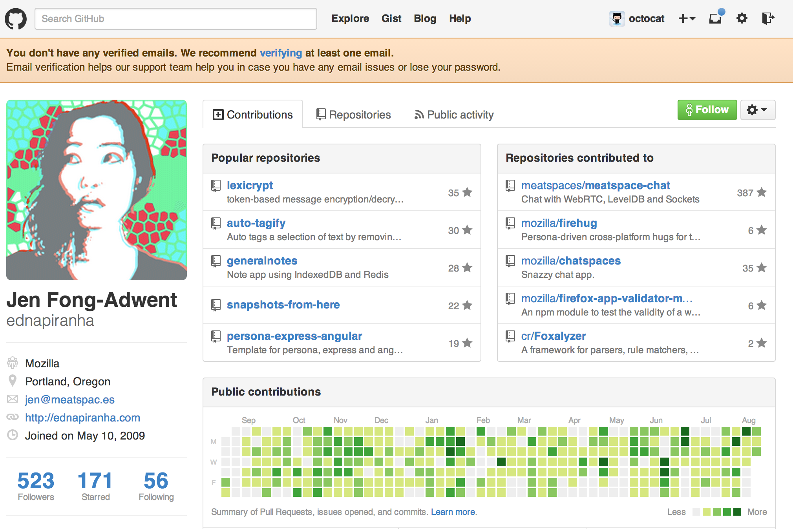
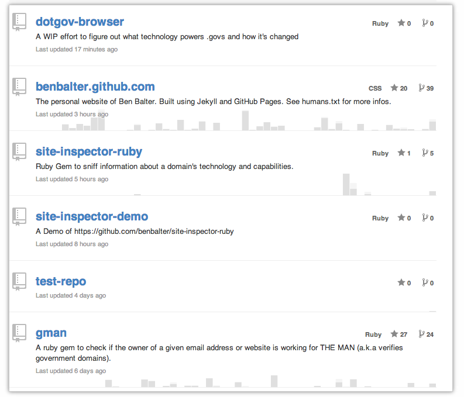
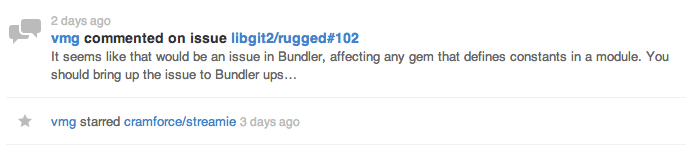
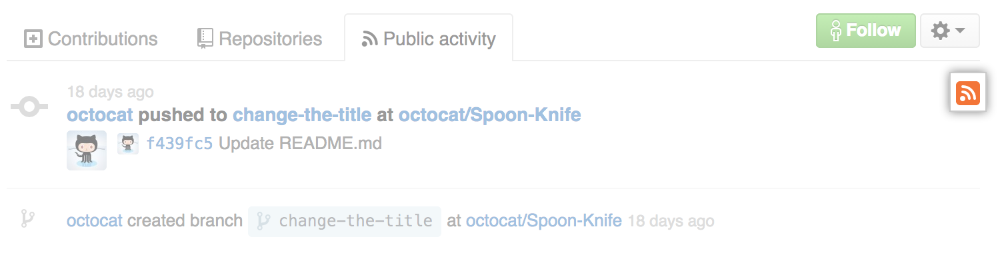

From Contributions, Repository, and Activity Feeds on your profile page to RSS feeds that allow you to follow a user's public activity in your favorite RSS reader, we provide several ways to keep track of All Things GitHubâ„¢.
Profile page
Your profile page has your Contributions, Repositories, and Public Activity feeds as seen in this screenshot:

The Contributions Tab
Your Contributions feed information includes:
- Contributions tab
- Contributions graph
- Contributions activity
For more information, you can read our help article about Contributions.
The Repositories tab
The repositories feed provides searching and filtering tools for your repositories, and shows a participation graph in the background for each repository.

The Public Activity tab
The Public Activity feed uses a similar layout to the repositories feed, but since not all entries are equally important (e.g. pushing a commit is more important than following another user), we render "minor" events as smaller single lines.

Click the RSS icon to subscribe to any user's public activity feed in your favorite RSS reader.

News feeds
News feeds show activity related to people and repositories. There are two types of news feeds:
- Your personal news feed, which shows activity on repositories you watch and by people you follow
- An organization news feed, which shows activity on repositories owned by an organization
For more information, see "News feeds."
GitHub blog
You can also subscribe to the GitHub blog to see what we are up to and what's new at GitHub.